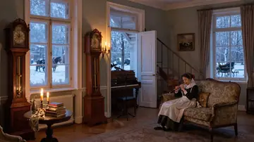
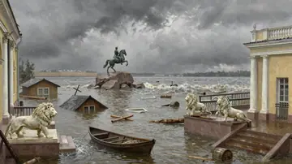
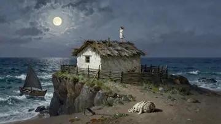

Редизайн и новый режим черновик для согласования · 14 октября
Стиль остаётся тем же: ч/б «газетная полоса», Playfair, Source Serif и Inter из DESIGN.md проекта. Добавлен один акцент — сургучно-красный: для новинок, подсказок и хода команды. Выбор теперь виден по форме, а не по оттенку: галочка в квадрате и сплошная заливка. Это читается даже на проекторе и в ч/б печати.
I
Старт: режим, затем «кто вы»
Первый экран — выбор режима, второй — две двери. Ученик сразу попадает к игре, учитель — в кабинет.
Книгоскопъсцены из книг
Выберите игру
Что будем узнавать?
1 · Режим
КнигоскопъУгадай сцену
Шаг 2 из 2
Кто вы?
От этого зависит, что откроется дальше.
Есть код урока?
2 · Две двери
Что меняется
Режим выбирается до всего остального. «Угадай героя» помечен сургучом как новинка.
Двери без паролей: учительский кабинет — просто отдельный экран.
Код урока ученик вводит тут же, не ищет в настройках.
Если игру открыли по ссылке-набору (?s=…), обе двери пропускаются и сразу стартует набор учителя.
II
Ученик: понятный выбор классов
Было: выбранный класс отличался от невыбранного только оттенком. Стало: квадрат-галочка и чёрная заливка, недоступные классы — пунктиром.
Клик по классу ставит или снимает галочку; хотя бы один класс выбран всегда.
Под плитками — живая сумма: сколько сцен получится.
Кнопка «Играть» повторяет итог: «Играть · 6 сцен», чтобы не гадать, что запустится.
III
Кабинет учителя
Три вкладки: «Набор» — какие сцены, «Классу» — ссылка и код, «На слайде» — командная игра. Результаты уроков остаются там же, где сейчас: они работают внутри Claude.
Кабинет учителя←
Режим
9 класс3 из 8 ✓
Слово о полку Игореве
древнерусская литература

Горе от ума
А. С. Грибоедов

Медный всадник
А. С. Пушкин
Герой нашего времени
М. Ю. Лермонтов

Тамань
М. Ю. Лермонтов
3 сцены в наборе
4 · Набор с галочками
КнигоскопъСцена 2 из 3 · Командная играEsc — выход
Команда «Онегин»
7
Команда «Печорин»
5
Подсказка · деталь 2 из 4
Здесь по ночам играют вдвоём: фортепиано и флейта.
Пробел ответ → дальше 1/2 очко команде
5 · На слайде: класс на две команды
Командная игра на проекторе
Учитель ведёт игру с ноутбука, класс отвечает вслух.
Очки начисляет учитель: +1 за деталь или направление, +3 за полный ответ. Сургучная точка показывает, чей ход.
Работает с пульта для презентаций: стрелки, пробел, цифры.
Набор и счёт хранятся в браузере, сервер не нужен.
IV
Новый режим: «Угадай героя»
Натюрморт из вещей героя. Нажатием находим 3–5 деталей: каждая открывает косвенную подсказку. Затем называем героя, автора, произведение и направление. Места нет. Ниже — пробный кадр для Чацкого.
КнигоскопъГерой 1 из 5 · 0 очк.
12
Найдено деталей2 из 4
Деталь 2 · Дорожный сундук
Три года в чужих краях, и ни строчки домой. А вернулся так, будто уезжал вчера.
«Горе от ума» · А. С. Грибоедов · 1824 Направление: реализм (как в сцене «Горе от ума» в игре)
1Плащ в снегу. Примчался на рассвете, не заезжая домой: столько вёрст без отдыха.
2Дорожный сундук. Три года странствий, после которых Москва кажется прежней.
3Книги с закладками. В этом доме ученье считают чумой.
4Карета у крыльца. Финал: прочь из Москвы.
Итого за героя4 300 из 5 000
7 · Разбор
Подсчёт (предложение)
Герой — 1 500, произведение — 1 500, автор — 1 000, направление — 1 000. Итого 5 000, как у сцены.
Детали очков не дают, как в сценах, но открывают подсказки. Позже здесь появится режим «детали и лишние вещи».
Имя вписывается, опечатки прощаются, принимаются варианты («Чацкий», «Александр Чацкий»).
Первые пять героев (9 класс)
Игорь — «Слово о полку Игореве»
Ярославна — там же
Лиза — «Бедная Лиза»
Светлана — «Светлана»
Чацкий — «Горе от ума»
Важно
Тексты подсказок в макете — черновые. Перед генерацией пришлю список деталей и подсказок по каждому герою, сверенный с текстом. Цитаты дословно, иначе без кавычек.
V
Логотип: три направления
Каждый знак показан крупно, в негативе и в размере иконки. Выберите один, и я доведу его до финальной версии.
А · Книга-окуляр
Из корешка раскрытой книги поднимается линза. Буквально «смотреть в книгу». Знак читается с любого размера и хорош на обложке приложения.
Б · Экслибрис
Овальная печать с лавром, монограмма «Къ» и подпись «ex libris». Самый «книжный» и торжественный вариант. Хорош для сертификатов и итогового экрана, в иконке мельчит.
В · Буквица «К»
Типографская буквица в рамке. Ствол буквы — переплёт, плечи — раскрытые страницы, в месте их стыка — зрачок-линза. Ближе всего к нынешней «газетной» эстетике, есть вариант в сургуче.